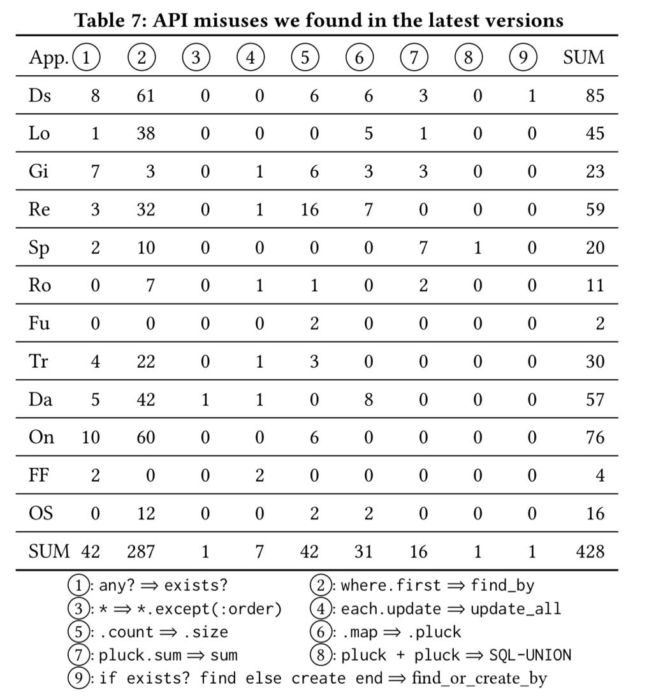

Hello World
CodeTengu Weekly 碼天狗週刊
如果命運的齒輪沒有出差錯，CodeTengu Weekly 都會在 UTC+8 時區的每個禮拜一 AM 10:00 出刊。每週會由三位 curator 負責當期的內容，每個 curator 有各自擅長的領域，如果你在這一期沒有看到感興趣的東西，可能下一期就有了。當然你也可以瀏覽一下前幾期的內容。
目前的 curator 陣容：
- @vinta - I failed the Turing Test - 科幻迷，最近在讀 Wool
- @saiday - Imnotyourson - 電量給我這種人用就是一種浪費
- @tzangms - Oceanic / 人生海海 - 最近真的都在玩薩爾達
- @fukuball - ImFukuball - 有新工作了，但歡迎直接挖角
- @mingderwang - Ethereum enthusiast
- @kako0507 - 熱愛嘗試新事物的前端工程師
- @chiahsien - 》〉》我們要找 iOS 工程師《〈《
- @uranusjr - Smaller Things - 聽說 Pinkoi 少了個棒球記者所以現在去應徵前端應該有機會！？Shadowverse:
uranusjr - @kkdai - 態度萬歲 - Learning Deeply....
- @yhsiang - AMIS / MAICOIN 徵才中，歡迎聯繫！
- @johnlinvc - 挑戰自動化家中電器
- @drumrick - 歡迎加入台灣 Kaggle 交流區
- @wancw
- @allanlei
- @theJian
你也可以關注我們的 Facebook、Twitter、GitHub 或 Open Source 專案，有很多 weekly 看不到的內容。有任何建議也歡迎來 Gitter 聊聊。
 @vinta
@vinta
Cool New Features in Python 3.7
Python 3.7 在前陣子釋出了，多了不少新功能，大家感受一下。
Dataclass 都出現了，說不定過一陣子 Python 也會有 Pattern Matching 了。
延伸閱讀：
 @yhsiang
@yhsiang
10 Small Design Mistakes We Still Make
值得花時間一讀的文章，可以重新省思對產品的設計。
隨著功能跟死線越來越近，有時候一些簡單的原則反而忘記了，這篇文章的作者提醒了十個我們忘記了的地方。
對照一下，現在產品上那些設計值得改進呢？
AWS EKS: Pluggable Worker Node Groups by Terraform
推一篇敝司 smalltown 大大的文章，如果你也有在用 AWS 跟 terraform，可以參考一下這篇文章的做法。
想找 EKS Cluster 在 AWS 上的解決方案，參考 Vishwakarma 吧！
Beyond counters — Using recompose and RXJS 6 to build a (semi) complex UI
利用 recompose 和 rxjs 做一個 UI 範例。
沒用過的朋友，剛好可以透過這個入門，更了解 recompose 的魅力，還有 rxjs 的實際應用。
在 React 專案中導入這兩個，能讓你的專案的某些部分，語意更精簡，架構也會比較好掌握。
Why we moved our GraphQL server from Node.js to Golang
SafetyCulture 的 GraphQL server 從 Node.js 跳槽到 Golang 的心得。
看起來就是比較方便的 schema generator 跟 type safe，還有較少的 memory usage。
Should we use React Native?
和 React Native 整合的 Expo 親自出來回應 Airbnb 不用 RN 的事情。
RN 有其優點，還是很適合某些開發情況。但是重要的是評估公司做 App 的目標跟手上的工程師資源。
筆者本身從 React 跳到 React Native，要上手的開發速度非常快。不過 Expo 的問題很多，希望之後能看到 Expo 更進步。
 @wancw
@wancw

[paper] How not to structure your database-backed web applications: a study of performance bugs in the wild
這篇論文歸納了一些網站開發常見的效能 anti-pattern，如後所列。其中主要是誤用/濫用 ORM 而帶來的影響。如果你使用 Ruby on Rails 開發，可以直接看附圖檢查一下自己的 ORM 用法。
ORM API 使用問題
- Inefficient computation (IC) - 雖然效果類似，但某些 ORM API 採用比較沒效率的 SQL
- Unnecessary Computation (UC) - 不必要的計算（如：在迴圈裡 query）
- Inefficient data accessing (ID) - 如：N+1 queries 或是一次撈太多資料
- Unnecessary data retrieval (UD) - 撈根本沒用到的資料
- Inefficient Rendering (IR) - 沒有效率的 view/template 寫法
資料庫設計問題
- Missing Fields (MF) - 其實可以存下來、不必每次計算的欄位
- Missing Database Indexes (MI) - 沒有 index
網站設計的取捨
- Content Display Trade-offs (DT) - 內容顯示方式取捨，如：分頁與否
- Application Functionality Trade-offs (FT) - 功能取捨，如：很耗計算效能的區塊不一定要每一頁都顯示
所以說，ORM /template engine 用起來很方便，還是得知道它到底做了啥才行啊。
[書] 魔力 Haskell
Haskell 是我每隔一陣子就會嘗試學習的程式語言（然後總是卡在 category theory 而放棄……）。前陣子買了《魔力 Haskell》，發現讀起來順暢許多。它從實用角度切入、順便介紹相關理論，還有套件系統（Cabal）、常用套件的介紹。
如果你也跟我一樣學習 Haskell 老是遇到挫折，不妨試試看這本。
- 試讀章節：Functor、透鏡組（Lens）、Applicative Functor
- 繁體中文譯本：天瓏網路書店 - 魔力Haskell
或者也可以試試看 @thecat 推薦的 Haskell without the theory 。看起來也是從實用角度切入，但我還沒讀過、暫時無法評價。
#推開源
啊！要是我早點知道有這個就好了
應該有不少讀者有類似的經驗吧？
所以 @Ellaeon 在 Twitter 上發起了 #推開源 運動， 歡迎大家一起用這個 hashtag 分享更多有趣的專案吧～
順便幫忙調查：這個主題的實體聚會有人想參加嗎？ XD
[IG] Suki Cat (@sukiicat)
照慣例還是要來推薦一個 Instagram 帳號。這次不是美女而是貓，畢竟網際網路就是用來看貓的啊。這貓真是漂亮到讓人驚艷。
是說，好像很少看到這樣一直在外面晃的寵物貓……